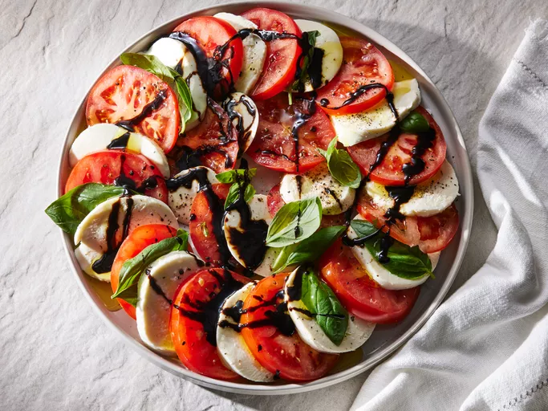

Caprese Salad with Balsamic Reduction

Description
This caprese salad with tomatoes, fresh mozzarella, and basil is drizzled with a sweet balsamic reduction and olive oil.
Easy, impressive, and delicious!
Ingredients
- Balsamic vinegar and Honey
- Tomatoes
- Mozzarella
- Salt and Pepper
- Basil
- Olive oil
Steps
- Make a balsamic reduction with the balsamic vinegar and honey.
- Arrange the tomato and mozzarella slices on a serving plate with basil.
- Drizzle with balsamic reduction and honey.
Home